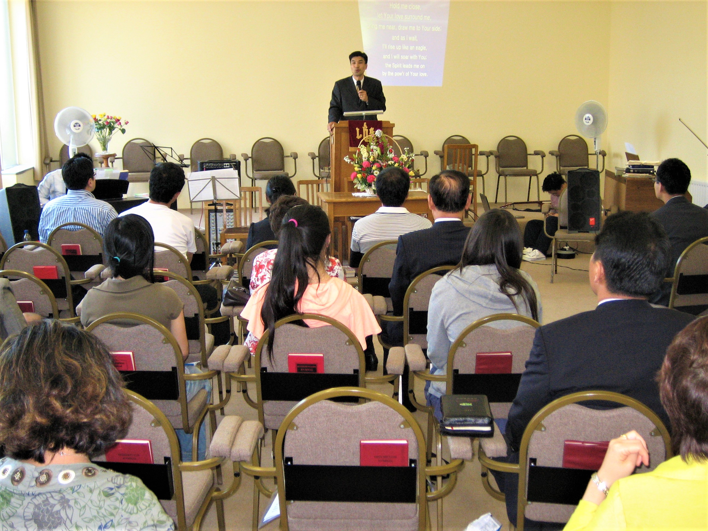
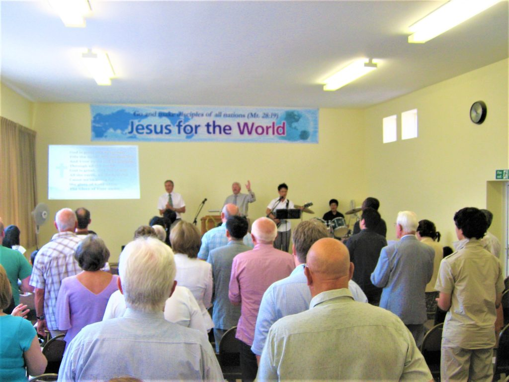
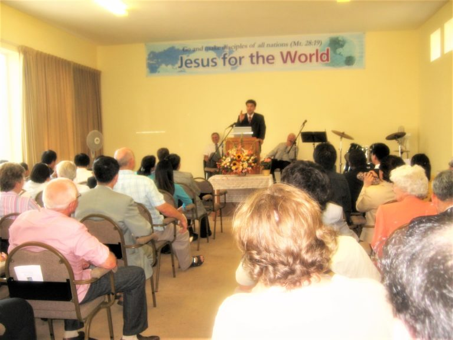

About Us
Cardiff International Church (CIC) is a vibrant multinational family,
with members from over 110 countries since its inception in 2008. The
church is a reflection of the global body of Christ, bringing together
diverse cultures and backgrounds united in faith and fellowship.
CIC is a Christ-centred church, where Jesus is at the heart of all that
we do. We are committed to being Bible-based, grounding everything in
the Word of God, and we seek to be Spirit-filled and led, allowing the
Holy Spirit to guide our lives and ministry. As a missional church, we
are passionate about sharing the gospel and reaching out to others with
the love of Christ.
Cardiff International Church (CIC) is working in close partnership with
Newport International Church (NIC) as part of AC UK, a dynamic Holy
Spirit-led mission movement that traces its roots back to the 1904–1905
Welsh Revival. This partnership allows us to carry forward the legacy of
revival, seeking to impact lives and spread the gospel in Wales and
beyond.
Vision Statement: Our Calling & Vision
Our calling and vision is to be a channel of God’s love and blessing,
making disciples of all nations by the power of the Holy Spirit.
We are called by God at CIC to be a channel of His love and blessing to
all nations (Genesis 12:1-3). God has proven His faithfulness to us,
teaching us His ownership and leadership in every step of our journey.
Together, we learn and support one another in unity as one family in the
love of God. Our desire is to become more like Jesus, striving to
maintain a healthy, balanced church that nurtures an upward relationship
with God, inward fellowship within the church family, and outward
mission in the community and beyond.
As we write Acts 29, we continue to fulfill the Great Commission
(Matthew 28:18-20), empowered by the Holy Spirit and working with
evangelical networks locally and globally for shared mission.
The Birth of CIC
CIC was planted through Brackla Tabernacle (BT), under the
leadership of Senior Pastor Roy Lewis. On 13 July 2008, Pastor GJ
Song, who was part of the pastoral team at BT, was released to plant
CIC.
In 2009, CIC merged with Cardiff Apostolic Church, and Pastor GJ
Song was inducted as the Pastor of the newly formed Cardiff
International Church.



(Photos: Ps GJ Song’s Induction Service in 2009)
“Many are the plans in a person’s heart, but it is the Lord’s purpose
that prevails.” Proverbs 19:21